Toyosato, Shiga: things to do, food and stays
Toyosato · Shiga
Toyosato
Highlighted on the Shiga map.

Stay
Tabist ビジネスホテル くらま 彦根

Tabist Business Hotel Kurama Hikone
Hotel in Aguinishi, Toyosato with business travelers and lakeside location; 15-minute drive from Hikone IC.
Dining
玉屋

Tamaya
海鮮天ぷら 紬屋 豊郷店
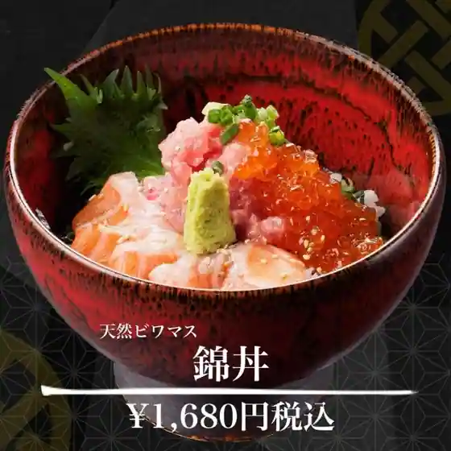
Kaisen Tenpura Tsumugi Ya Toyosato
豊郷小学校旧校舎内カフェ
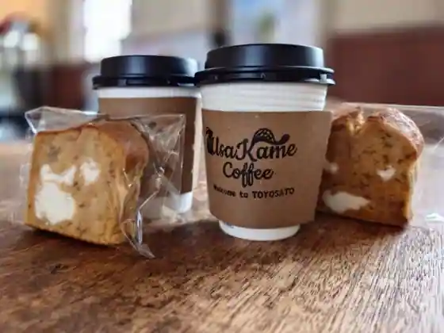
Toyosato Shogakko Kyu Koshanai Cafe
豊郷発酵倉
Toyosato Hakko Kura
FukuFuku
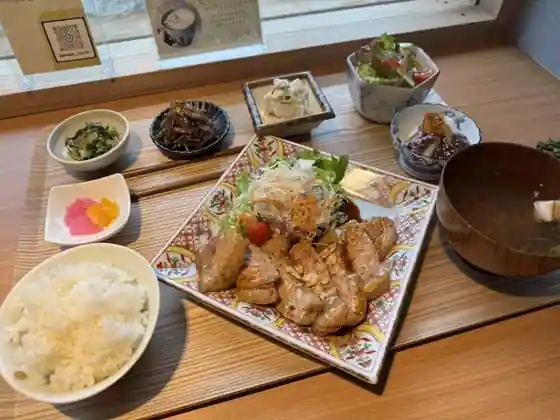
FukuFuku
インド・ネパール料理の店 カレーハウス 豊郷店
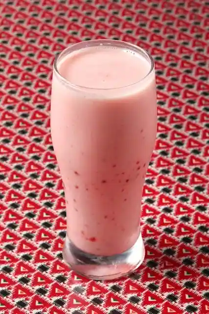
Indo Neparu Ryori No Kare House Toyosato
近江ちゃんぽん亭 豊郷店
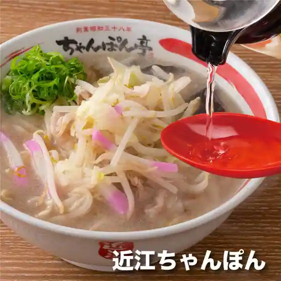
Omi Chanpon Tei Toyosato
台湾美食城
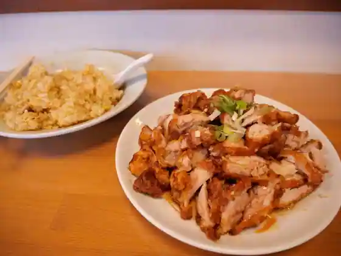
Taiwan Bishoku Shiro
きょうかどう
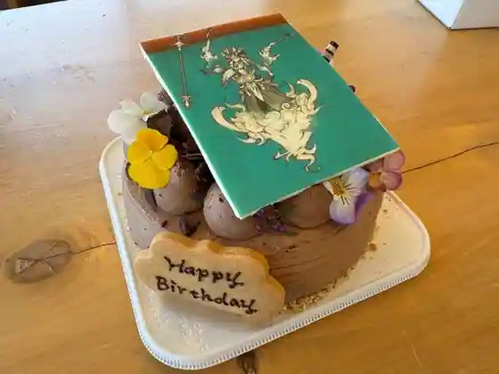
Kyokado
天下一品 豊郷店
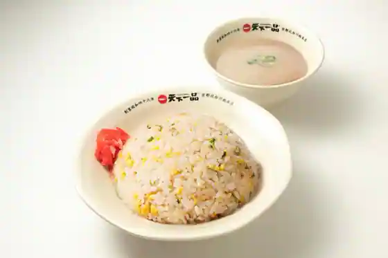
Tenkaippin Toyosato
トリ亀
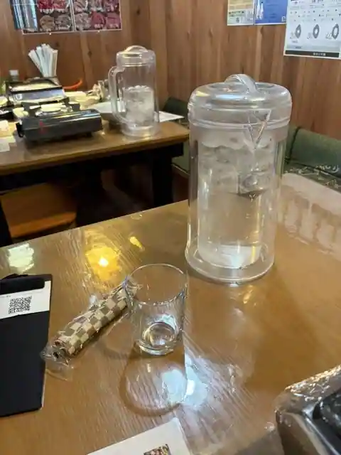
Tori Kame
滋ぃ家
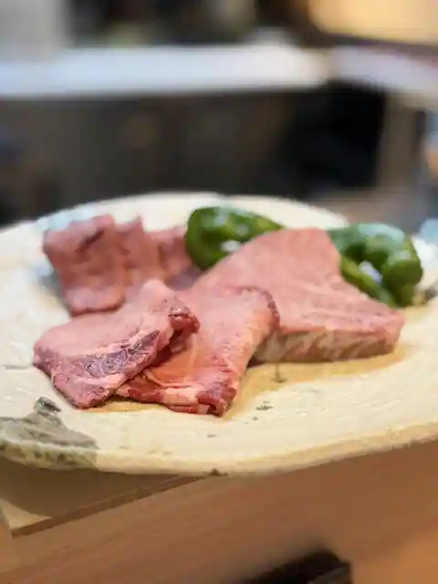
Shigeru I Ie
無添くら寿司 豊郷店
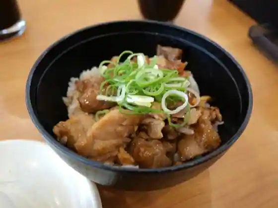
Mu Soe Kura Sushi Toyosato
マクドナルド 8号線豊郷店
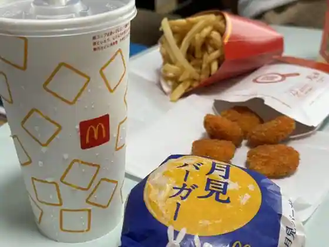
McDonald's 8 Gosen Toyosato
豊辰
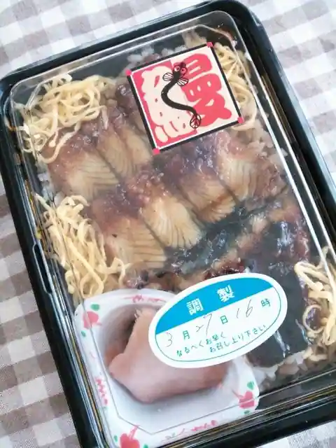
Yutaka Tatsu
肉処 マルヨシ
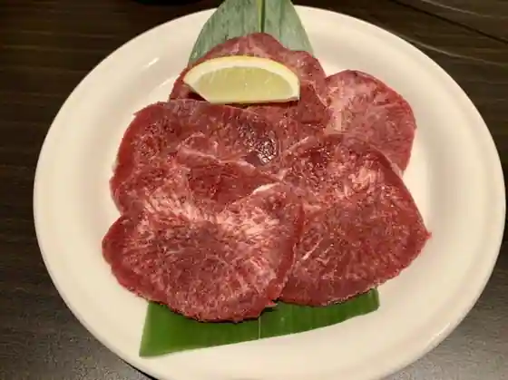
Niku Tokoro Maruyoshi
とり冨
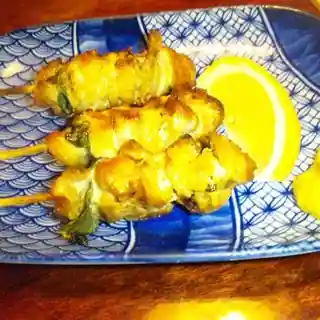
Tori Tomi
みな月
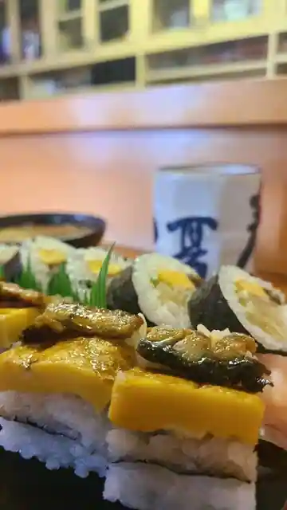
Mina Gatsu
鶏笑 豊郷店
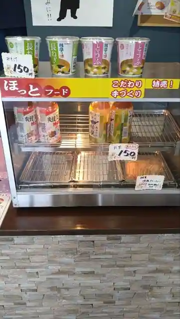
Niwatori Warai Toyosato
大野精肉店
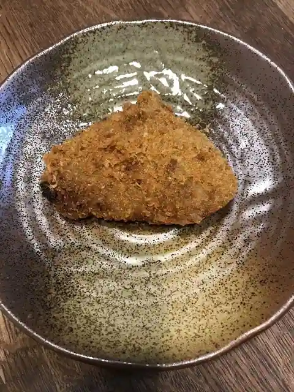
Ono Seiniku
遊亀亭
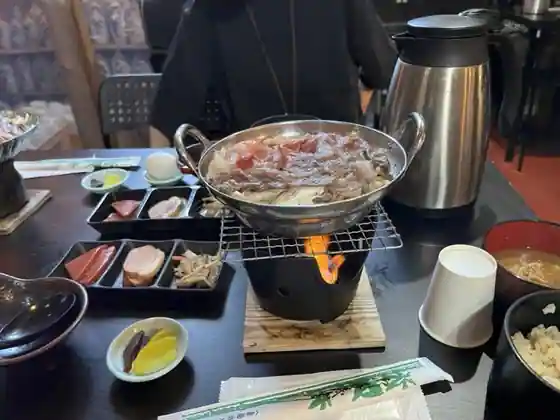
Yuki Tei
お好み焼き きくちゃん
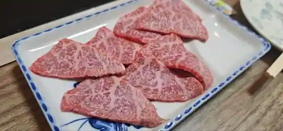
O Konomi Yaki Kikuchan
くらま堂 金剛寿司
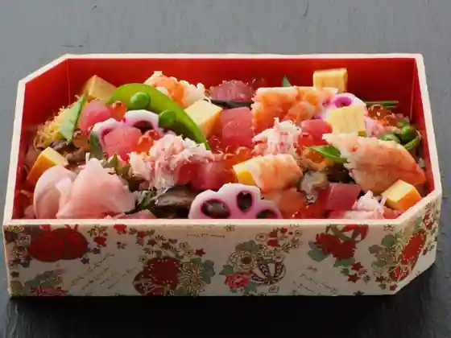
Kurama Do Kongo Sushi
Sights
A Ji Shi Shrine
Senjin Wo Shinobu Kan

Oka Village Honke
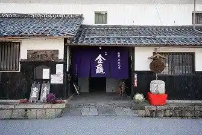
Inukami Shrine (Toyosato)
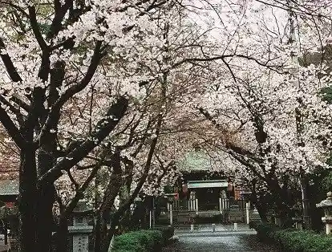
Toyosato Shogakko Kyu Kosha Gun
Itochu Be Memorial Museum
Sen Ki Tera
Omitetsudo Toyosato Eki
Toyosato Town Hall